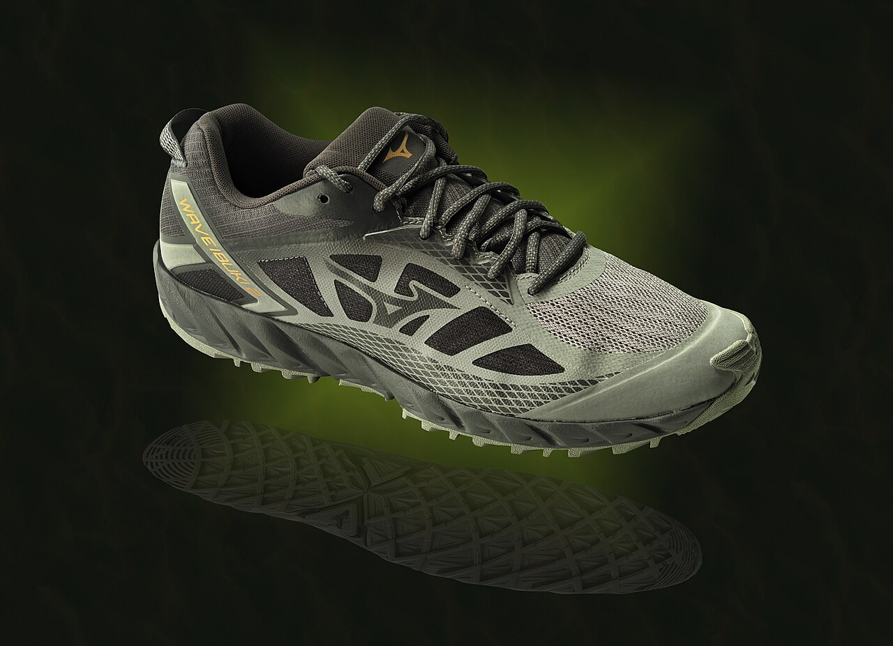

Osaka's famous canal strip: the Glico running man, giant mechanical crabs, blocks of neon doubled in the water, and street food in every direction. Louder, funnier and more casual than anywhere in Tokyo. And yes, there's a giant Round1 arcade tower right on the strip.



01The Glico Man
The century-old running-man billboard over Ebisu Bridge, Osaka's mandatory photo.
02Street-food gauntlet
Takoyaki, okonomiyaki (the savory pancake Osaka perfected), kushikatsu fried skewers, grilled crab legs.
03Round1 Dotonbori
Eight floors of arcade, claw machines, and on the Spo-Cha floors, batting cages and roller skating. Open basically all night.
04Canal cruise
A 20-minute boat run under the neon, cheap and surprisingly great after dark.
05Hozenji Yokocho
One lane back, a stone alley with a moss-covered temple statue, old Osaka hiding behind the neon.
Good to know
- Come at dusk and stay into the night, the neon is the show.
- Okonomiyaki etiquette: eat it off the griddle with the little spatula.
- Kushikatsu rule every local will tell you: no double-dipping the sauce.